Create a Restful api using C#
今天拿到了一个任务
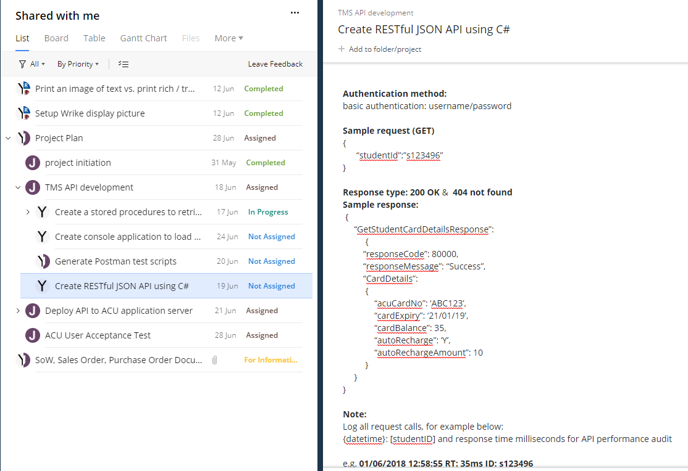要写一个API，要求是每次学生登陆之后可以看到他的学生卡的相关信息，包括卡号，有效期，余额，还有可不可以自动充值等等。
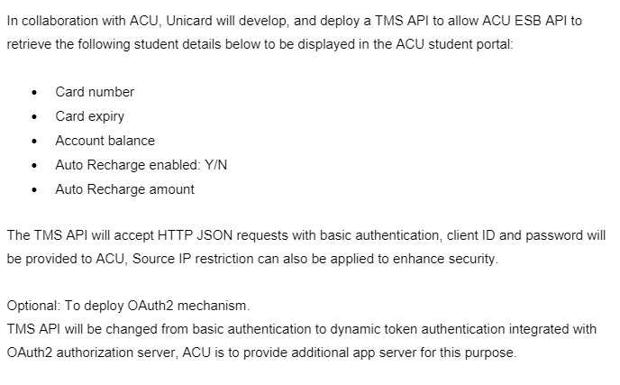那么我们就要先写一个stored procedure把相关信息提取出来,这些信息牵扯到4个table来自于两个database。
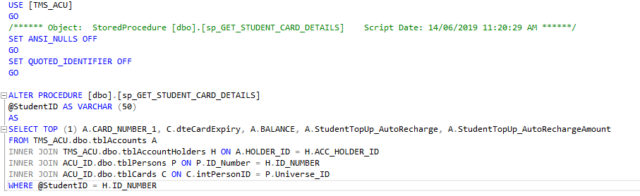随便打一个StudentID试一下看看能不能成功运行
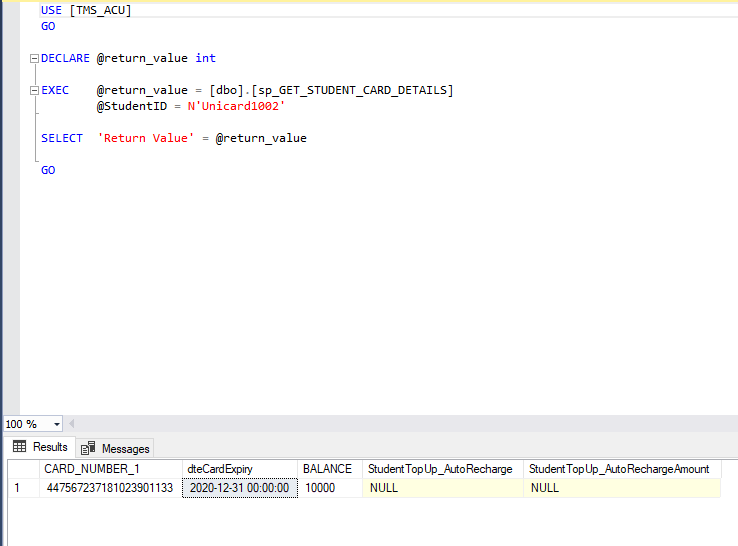接着在Microsoft Doc tutorial可以帮助我们写一个简单的api模版。在用connectionString连接上database然后用postman测试一下
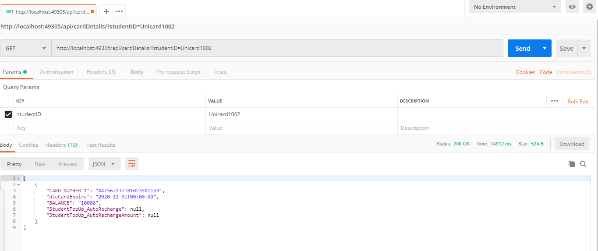这样基本上api就算写的差不多了，接下来还要把格式改成要求的样子
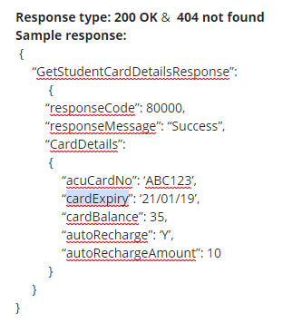所以把它改成JSON Object这样好改一点，刚才都是直接return DataTable。
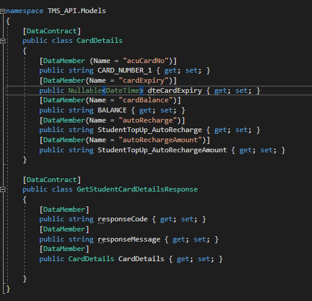结构基本就是这样，然后再测试一下看看能不能拿到相同的格式
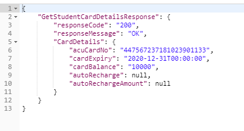要求中还说到要有基本的authentication。有可能就是在function前面加上authorize attribute，等下周问问leader。另外就是要log所有的api calls。包括api整个的运行时间（response time），StudentID，现在的系统时间。用stopwatch计算出每次call所需的时间，其他的都好弄。我先把output写在debug console里了，回头再改看看要不要直接output到一个file里面。
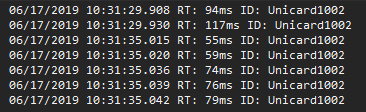接下来就是要写一个console application来call我们的api了，毕竟不能一直用postman做测试啊。
用HttpClient去call api，已经成功了，但是有两个问题，一个是如果连续call10次的话每次用的时间都很长，用postman的时候很多时候只有20ms，但是现在有上千。。。第二个问题就是我还需要做一个simultaneously call。
一个周末过去了。。17/06/2019
改了改async，await现在call api没什么问题了
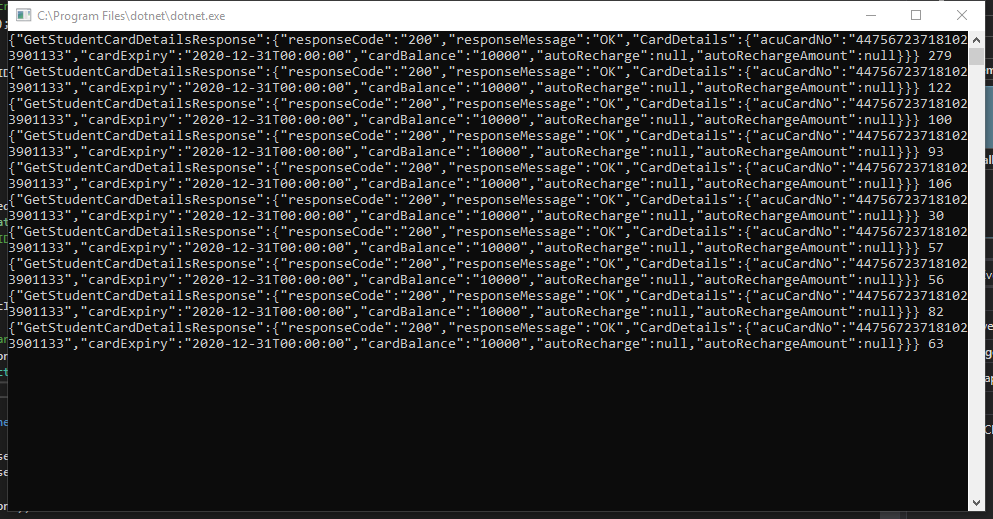然后就是每次同时call10次api，这个的话我上网查了查，同样只要改await就可以。
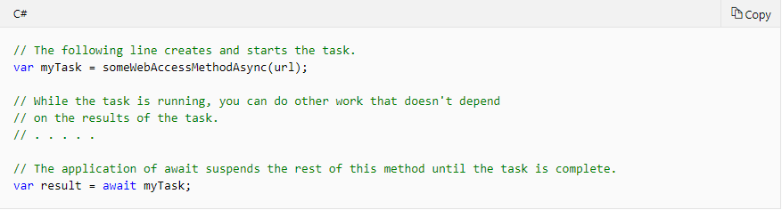这个async，await的意思是：如果task前面有await，那么程序会暂停直到拿到task的返回值或task结束运行之后才会继续。而如果task前面没有await，意味着在它被创建的时候程序可以继续运行之后的代码，只要它们不依靠task的结果。所以我们可以创建10个没有await的task，最后在一起await然后output。
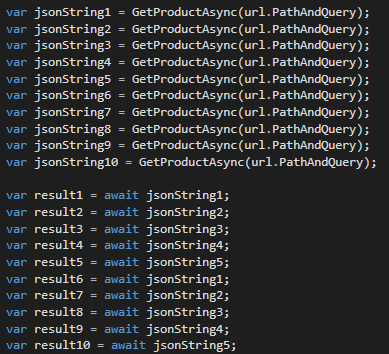这样的话虽然每次api call的时间比一次一次call要长很多但是如果计算500次call的总时间的话平行运算还是有优势的
平行运算时每次api call的时间
500次call的总时间，总共算了10次，基本在8秒左右
单次运算时每次api call的时间
单次运算时每500次的总时间，总共算了10次，基本都超过了10秒
关于在api中加入basic authenticaiton：To access the web API method, we have to pass the user credentials in the request header. If we do not pass the user credentials in the request header, then the server returns 401 (unauthorized) status code indicating the server supports Basic Authentication.
新建一个class， inhert from IHttpModule，这样就可以让api support basic authentication了。但是我们还要让console在request中加入auth header。